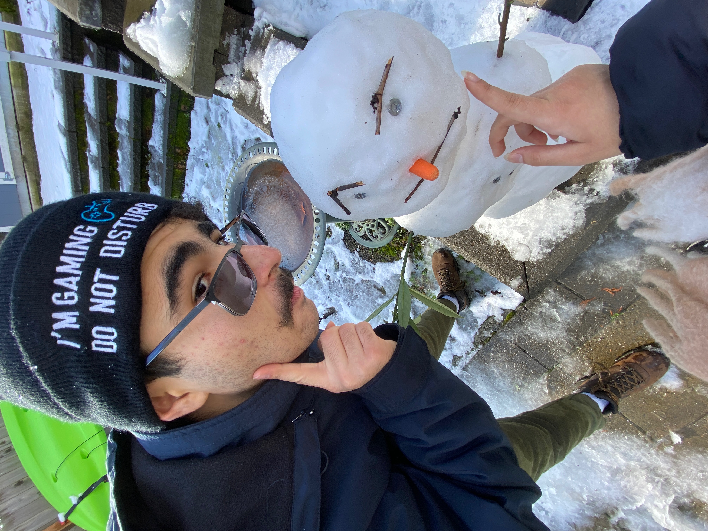

Hi! My Name is Atalay Kerim Turkarslan!
I live in Seattle, Washington with my family of four. I go to Eastside Preparatory School in Kirkland as a rising junior. I have taken an HTML class in 8th grade, classes on Python and Java in 9th grade, machine learning and Godot game development classes in 10th grade, and the All Star Code 3-Week Summer Intensive, on top of having an interest in programming from an early age.
Family & Life
My parents were born in Turkey and immigrated here later after marriage. I was born and raised in Washington in the United States, but we still try to go to Turkey every year or so. My parents are both computer scientists and my older sister is currently a junior studying CS at the University of Washington.
Hobbies
Some of my hobbies include drawing, video games, programming, spending time with friends and family, and Taekwondo.